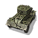

Взводный командный пункт позволяет игроку заказывать Королевских саперов, чтобы поддерживать пехоту и транспортные средства, а также узкоспециализированные группы поддержки для нанесения конкретных угроз на поле боя.
Улучшения
Требуется |
||
|---|---|---|
|
 75
15
|
Запрос автомобиля AEC Mk. III с 75-мм пушкой
Вооруженный мощной 75-мм пушкой, AEC обеспечивает идеальное сочетание огневой мощи, мобильности и универсальности. |
|
|
75
15
|
Запрос позиции 40-мм пушки Бофорс
40-мм пушка Bofors QF - это, прежде всего, зенитное оружие; он имеет надежный урон и необходимую точность для поражения как наземных, так и воздушных целей. |
|
Дает строить
Требуется Доступно для командиров |
||
|---|---|---|

180
2
|
Британские медики автоматически излечивают раненую пехоту поблизости. Лечить можно только вне боя. |
|

300
8
|
Агрессивный юнит ближнего боя. Один на один перестреливает панцергренадеров и штурмовых саперов. Единственный базовый юнит за британцев, способный производить разведку. |
|
|
340
9
|
Снайпер с противотанковым ружьем .55 калибра опытно подготовлен, чтобы ответить на угрозу от опасных немецких коллег. Мощные противотанковые винтовки Boys позволяют им сражаться не только с пехотой. |
|
|
320
7
|
6-фунтовое противотанковое ружье Ordnance QF является стандартным передовым противотанковым орудием для британских войск. Его сочетание хорошего пробития и превосходной точности делает его эффективным против ряда транспортных средств. |
|
|
280
60
6
|
Оснащенный мощной 75-мм пушкой, AEC обеспечивает идеальное сочетание огневой мощи, мобильности и универсальности. |
|